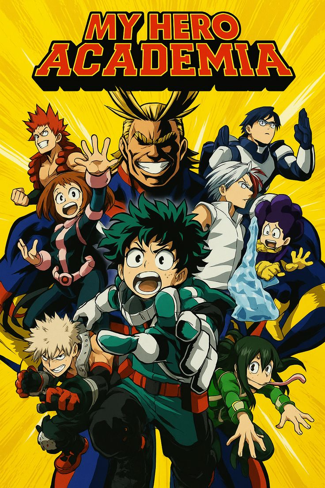
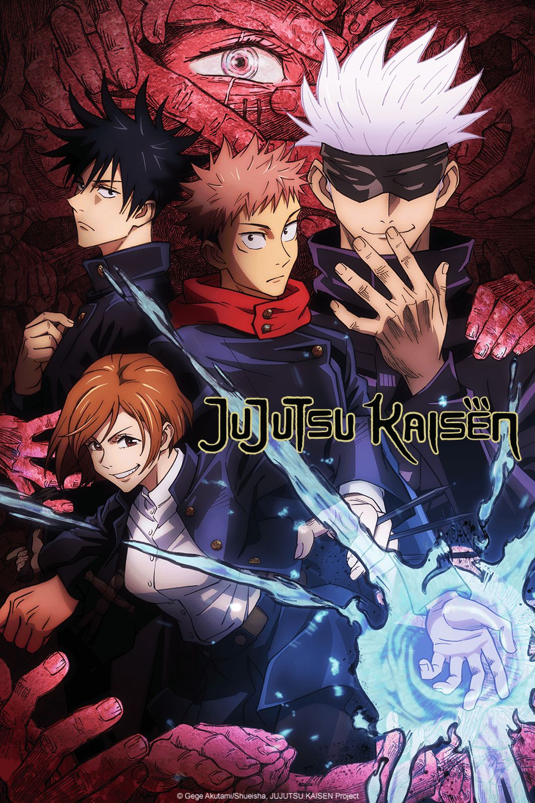
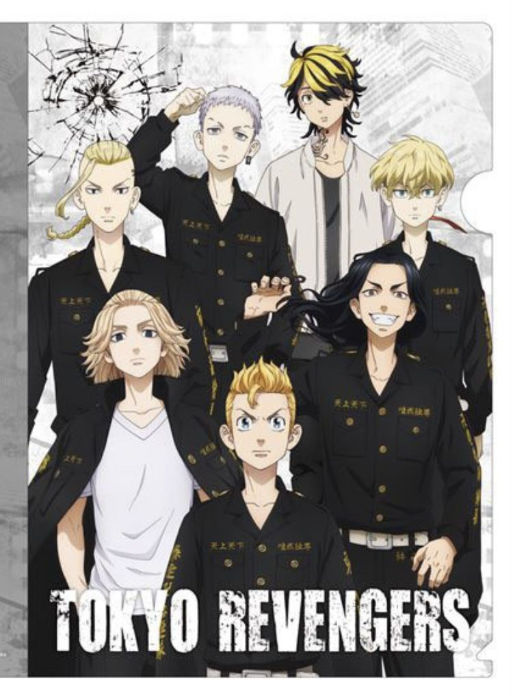
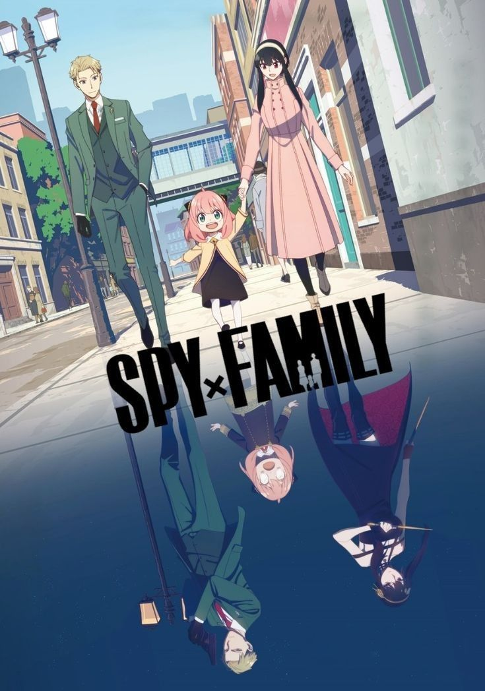
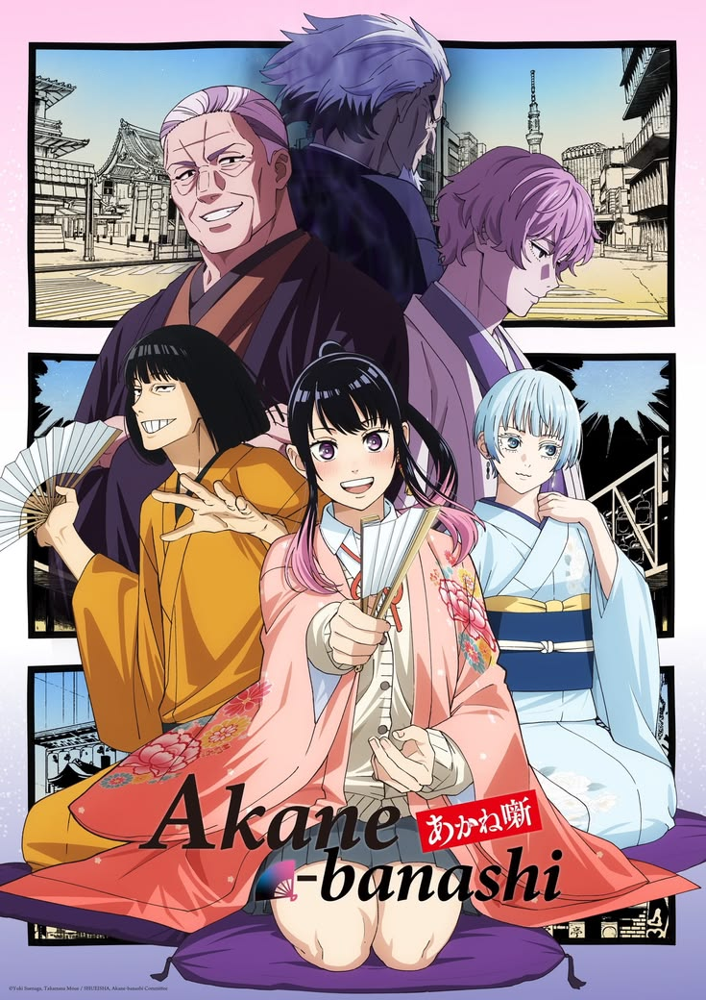
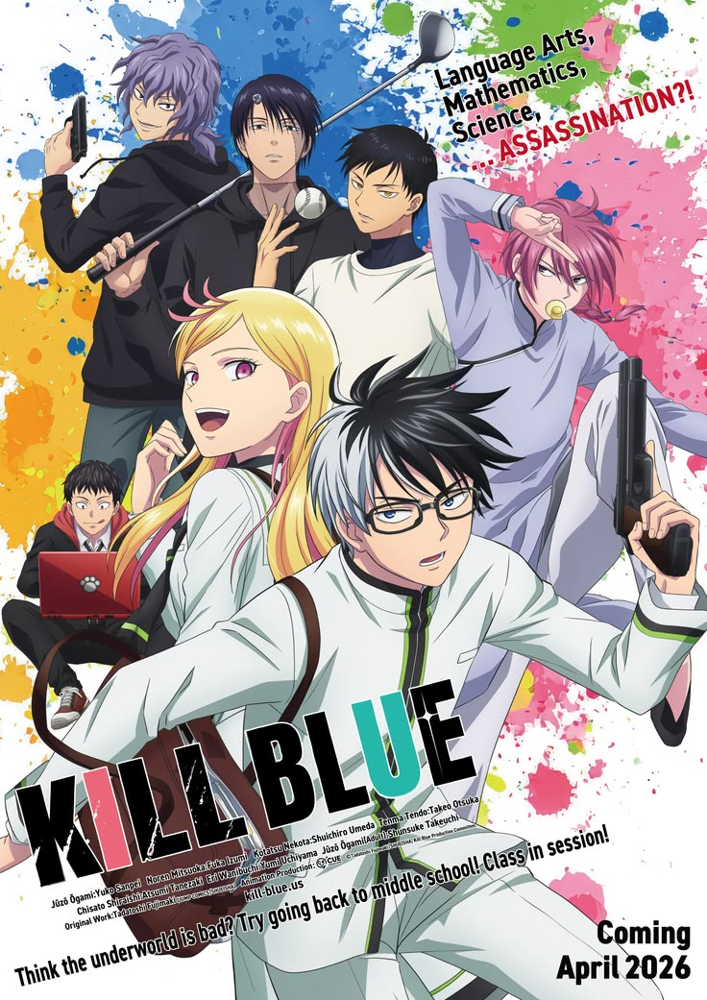
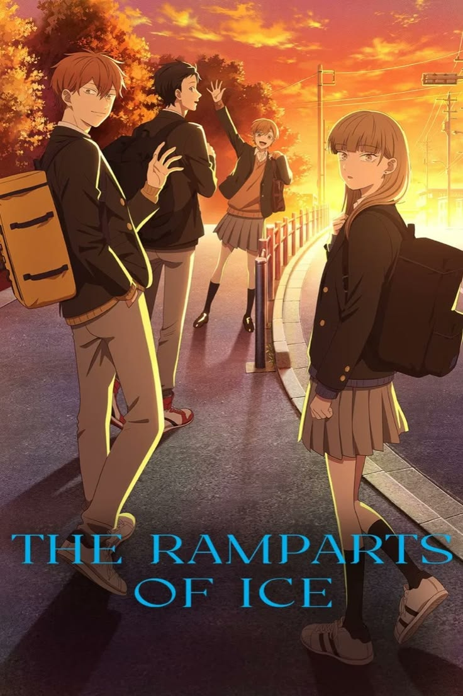

Newly Added Anime
Last 24 hours

My Hero Academia
20 minutes ago
Sub | Dub

Jujutsu Kaisen
29 minutes ago
Sub | Dub

Demon Slayer
35 minutes ago
Sub | Dub

Tokyo Revengers
40 minutes ago
Sub | Dub

Spy x Family
58 minutes ago
Sub | Dub

Akane-Banashi
59 minutes ago
Sub | Dub

Kill Blue
1 hours ago
Sub | Dub

The Ramparts of Ice
2 hours ago
Sub | Dub